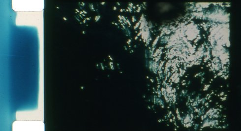
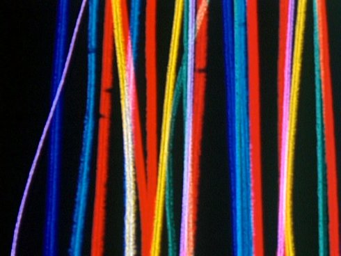

{kind=link}
Labor of love
L'abominable (paris)
Monday | 12 oct 8.00 pm | werkstattkino
|
Further
Radical
|
An explosion of light penetrates the photochemical black and white emulsion of black radish roots.
|
The
Sound Drifts
|
Member of the famous Metamkine label, Jérôme Noetinger works with a tape recorder and generates a complex sound organism based on microphonic captures, electromagnetic parasites and radio hazards that interact in the film with stroboscopic effects. Cinema for the ears!
Martine Rousset

|
|
"The sea is a language whose meaning we have lost." (Jorge Luis Borges)
Emmanuel Lefrant

|
All
Over
|
"A film without a camera, which also differs from direct film in that it has not been touched by any tool (not even by hand).
|
Overall
|
The creative process has been reversed, the primary material is now oil paint, which is applied to the film strip using the Pollock drip technique, then all colors were reversed in the laboratory using a contact printer.
|
|
A deserted black space that you try to fill up to the point where you sink completely into color.
|
Parties
visible et invisible d'un ensemble sous tension
|
A landscape is photographed and at the same time a film strip is buried in the same place where it was shot: The emulsion, the victim of erosion, is subject to biochemical degradation.
|
Saraban
|
Work on speed, rhythms, flickers and color.
|
Still
Frames
|
Twin film to SARABAN. The aim was not only to prove that the same source of image can generate two different films but also to highlight the incidence of light on color.
|
Underground
|
Revealed "secret forms" of the emulsion, emphasizing the materiality of the celluloid and processes.